Android 同宽视觉对照
2026-11-11 · 36 种组件 / 37 个样例 / 74 组浅深色对照。每张图左原站、右 Android；画布宽度均为 360，内部固定宽度控件保留原例尺寸。点击图片可查看原尺寸。
详细报告与比较条件
Chain of Thought 中
折叠入口把后续回答下推约 28；总高只增加 9.5，是网页 288 最小高度吸收了部分差值，不能仅凭总高判断一致。
360 同宽画布 · 网页 288.0 → Android 297.5
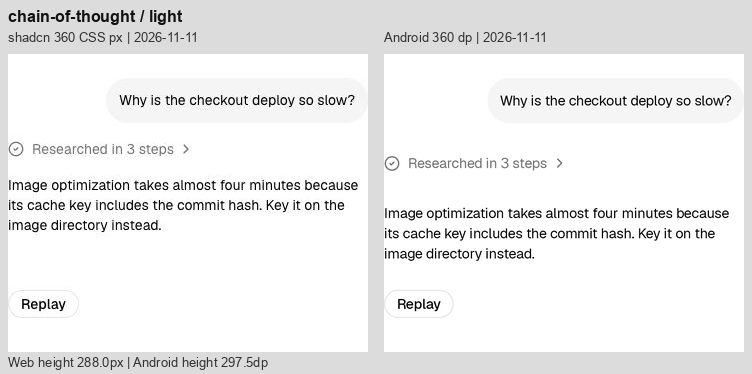
Chat 中
800 总高一致，但空态图标/文案整体偏上约 12–16，标题说明间距更紧；输入区偏高，附件/发送圆底 28 对比原站 32，重置圆底也偏小。
360 同宽画布 · 网页 800.0 → Android 800.0
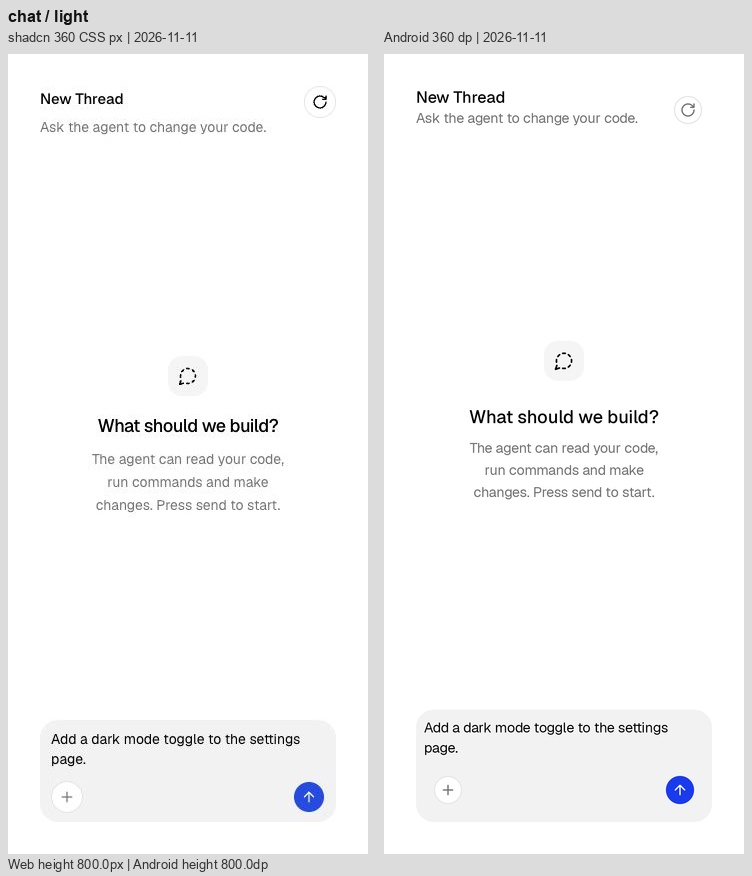
Checkpoint 中
“Button renamed” 使用 12 sp caption，原站显示更大的正文；中间分隔区更高，第二组消息下移约 24；Restore 文字颜色也较深。
360 同宽画布 · 网页 288.0 → Android 290.7
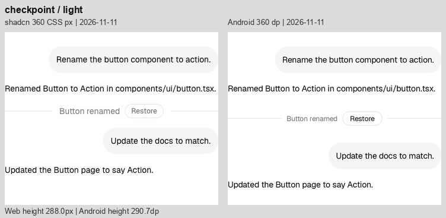
Confirmation 初始态 轻
按钮轮廓接近；同一个 288 高画布里，Android 可见按钮比原站约高 10，来自按钮外部的命中留白。
360 同宽画布 · 网页 288.0 → Android 288.0
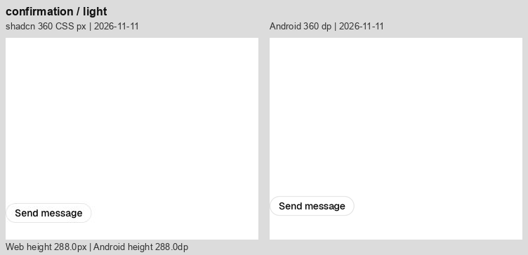
Confirmation 待审批 中
Thought 行和审批面板整体更松；面板内容分栏不同，Deny/Approve 向右，说明列更窄。总高增加 44.2。
360 同宽画布 · 网页 288.0 → Android 332.2
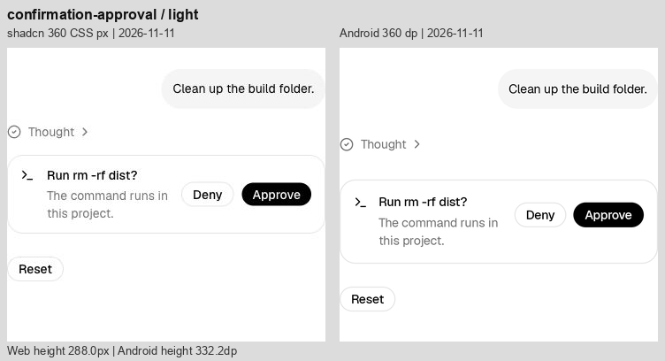
Context 轻
8% 胶囊基本接近；总高 124→144，胶囊中心向下 10，来自 48 dp 命中区域。
360 同宽画布 · 网页 124.0 → Android 144.0
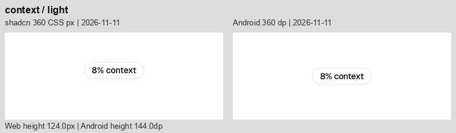
File Tree 显著
7 行每行 48 对比网页 28，总高增加 140；文件夹内左边距约少 4，第一层文件夹标题略偏左；浅色选中底板偏深。层级缩进与 320 内宽已对齐。
360 同宽画布 · 网页 244.0 → Android 384.0
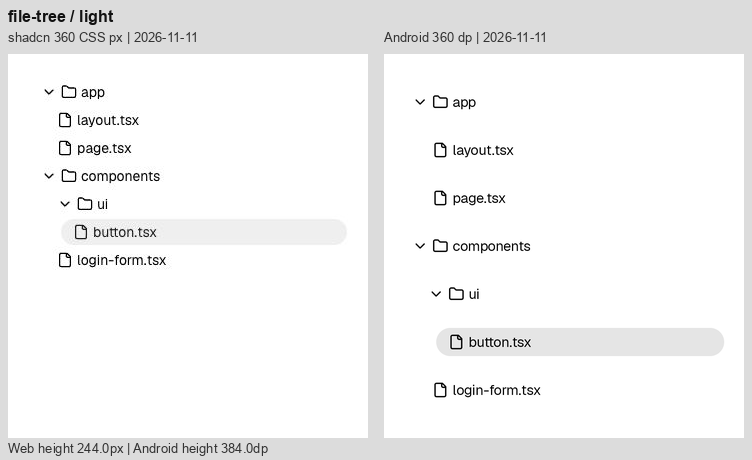
Inline Citation 中
引用徽标已参与换行，但第二段 Server Components 的断行位置不同，react.dev 被推到下一行；徽标内距/基线仍有细差，总高反而少 4.5。
360 同宽画布 · 网页 374.0 → Android 369.5
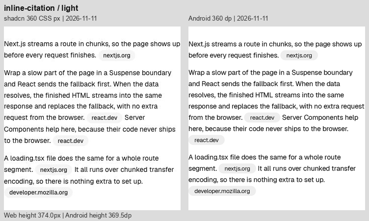
Message 显著
工具栏图标中心间距明显更宽；代码标题区更高，行号/命令内容向右。行内代码缺少网页式的独立内距与圆角，字形占宽改变换行；总高增加 29.4。
360 同宽画布 · 网页 434.2 → Android 463.6
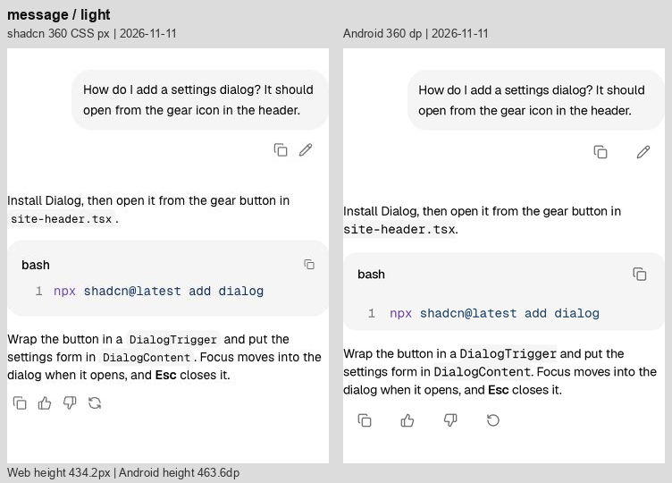
Model Selector 中
外框总高几乎一致；占位文字左/上内距更小，工具栏上移。模型与 Effort 胶囊为约 28 高，原站约 32；内部横向宽度也偏窄。
360 同宽画布 · 网页 160.0 → Android 160.4
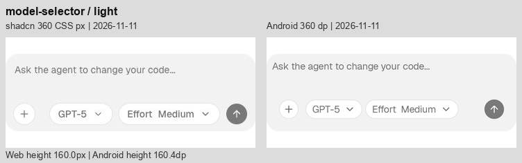
Plan 中
展开标题增加纵向留白，步骤连接线下移；总高增加 41.6。静态步骤的行距已接近，标题前后与 Replay 周围还有额外空间。
360 同宽画布 · 网页 367.5 → Android 409.1
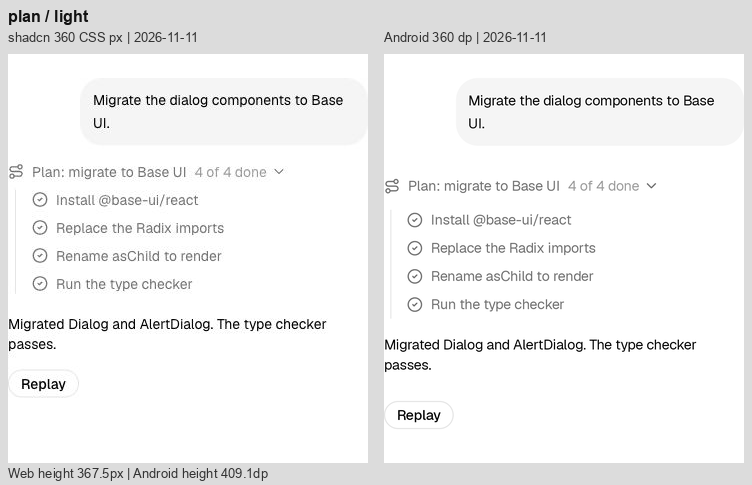
Prompt Input 中
同 Model Selector：8 dp 外围内距使文字位置不同，28 dp 圆钮/胶囊偏小，底部控件整体偏上；不能用 160.0≈160.4 的总高认定内部一致。
360 同宽画布 · 网页 160.0 → Android 160.4
Queue 显著
4 个任务行被拉开，正文和 Replay 大幅下移，总高增加 152.8；48 dp 行高叠加每项 8 dp 间隔。
360 同宽画布 · 网页 344.8 → Android 497.5
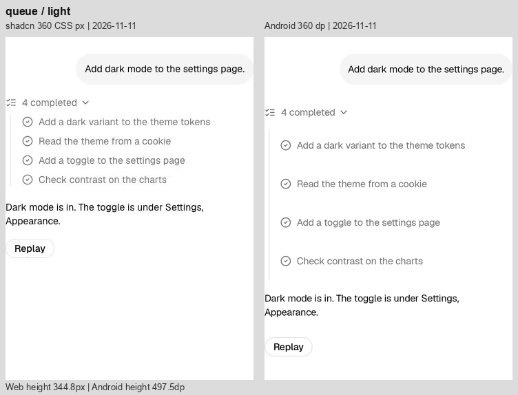
Reasoning 中
标题入口下移，正文第一段更低；正文段落间距与网页不同，抵消了部分头部差值，回答起点反而接近。总高增加 21.6。
360 同宽画布 · 网页 417.2 → Android 438.9
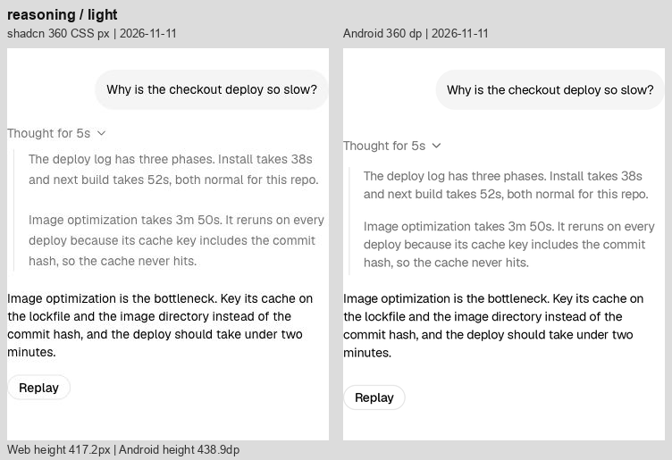
Sources 显著
来源行距明显过松，3 条来源后面的 Replay 下移，总高增加 124.9；来源行左缩进略小。
360 同宽画布 · 网页 339.5 → Android 464.4
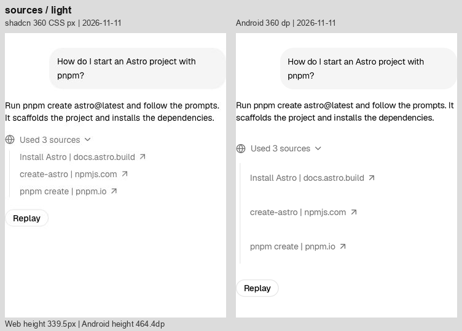
Stack Trace 显著
标题、源码路径与 framework 入口更松，总高增加 153.2；错误正文左缩进偏小，红色更鲜；外层多出的持续竖线与网页视觉不同。
360 同宽画布 · 网页 384.8 → Android 537.9
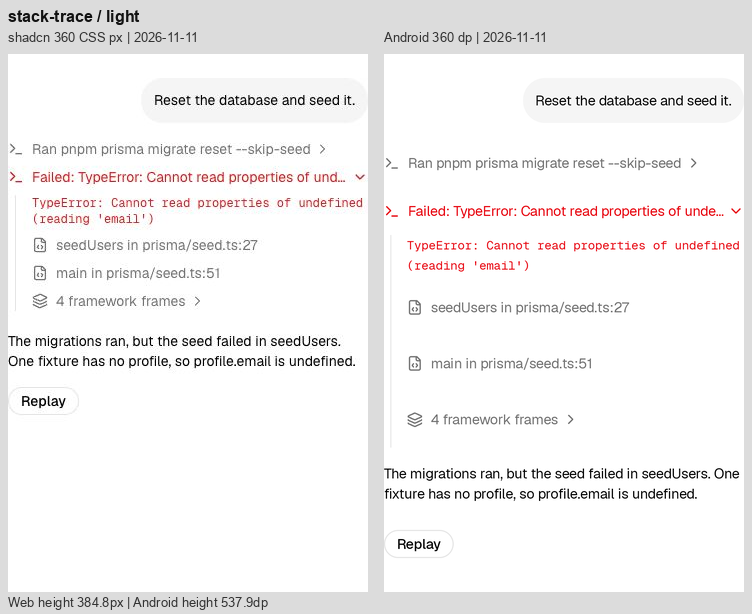
Subagent 显著
嵌套工具行间距更大，总高增加 113.6；长命令的可用宽度与省略位置不同，内层说明整体向下。
360 同宽画布 · 网页 459.8 → Android 573.3
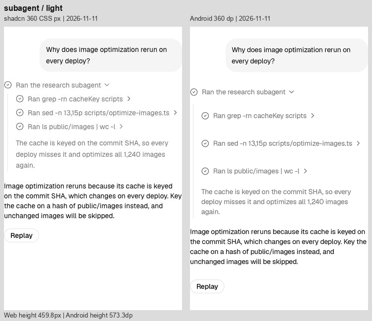
Suggestion 中
建议条和输入区之间空隙更大，总高增加 28.4；右侧露出第三个建议的一部分，网页此位置有渐隐效果。输入控件尺寸同 Prompt Input。
360 同宽画布 · 网页 196.0 → Android 224.4
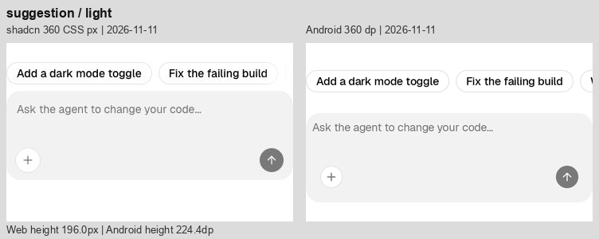
Task 中
两组入口把回答向下推，末尾 Replay 继续增加留白，总高增加 68.9；正文中路径断行也不同。
360 同宽画布 · 网页 299.5 → Android 368.4
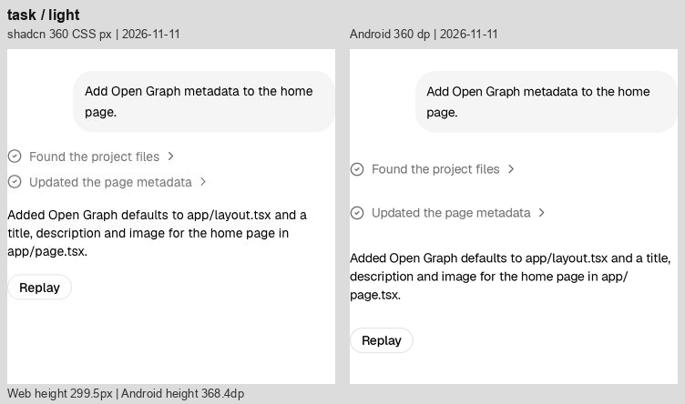
Terminal 显著
三条命令入口增加纵向空间，总高增加 80.6；输出块左缩进略小，长命令/表格文本断行不同；网页底部有溢出渐隐，Android 为直接裁切/滚动。
360 同宽画布 · 网页 532.8 → Android 613.3
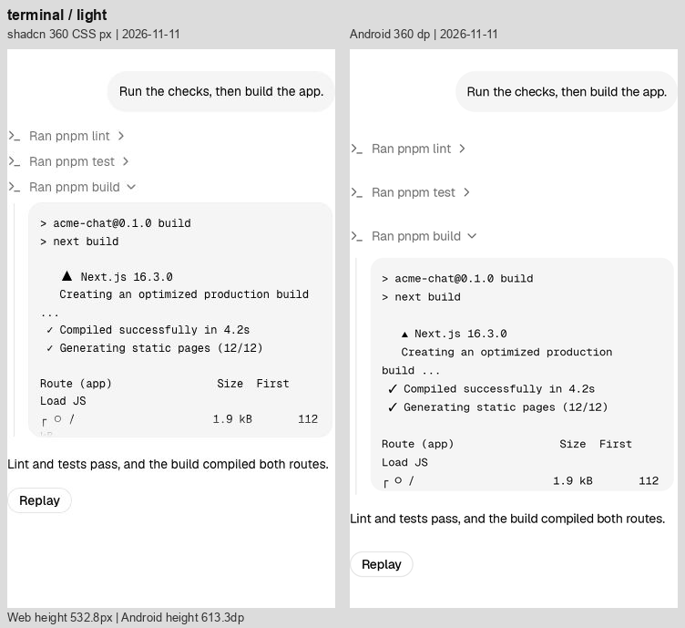
Test Results 显著
嵌套入口与测试文件行更松，总高增加 113.4；错误块随层级略左移，堆栈路径换行位置不同。
360 同宽画布 · 网页 502.2 → Android 615.6
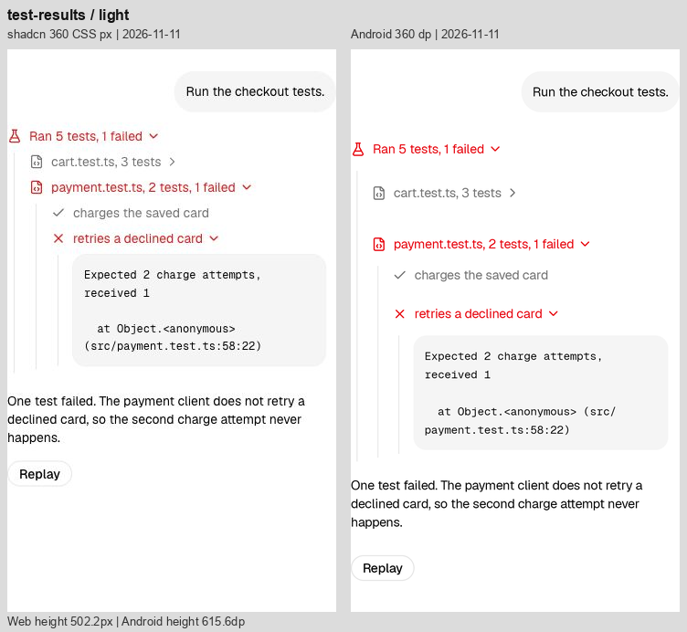
Tool 中
三条工具入口增高，错误输出块和结论下移，总高增加 81.7；输出块左边界比网页略靠左。
360 同宽画布 · 网页 320.2 → Android 401.9
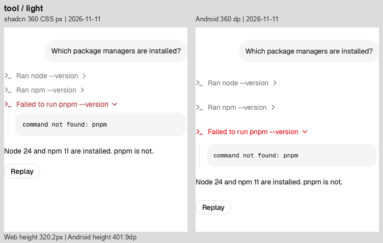
Stack 轻
标题/说明的垂直度量累计使分隔线及正文下移约 5.5；字重和主要结构接近。
360 同宽画布 · 网页 113.0 → Android 118.5
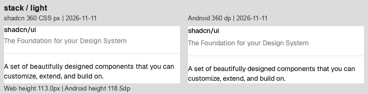
Row 轻
四个徽标的总宽、单项边框与文字占宽有小差异；排列顺序与间距节奏一致。
360 同宽画布 · 网页 64.0 → Android 64.0
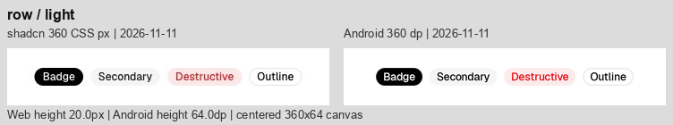
Card 显著
422.5 对比 357，高出 65.5；Sign Up 更低，Password 行及页脚分隔线下移。输入框命中留白、Forgot 按钮行与页脚按钮间距共同放大高度。
360 同宽画布 · 网页 357.0 → Android 422.5
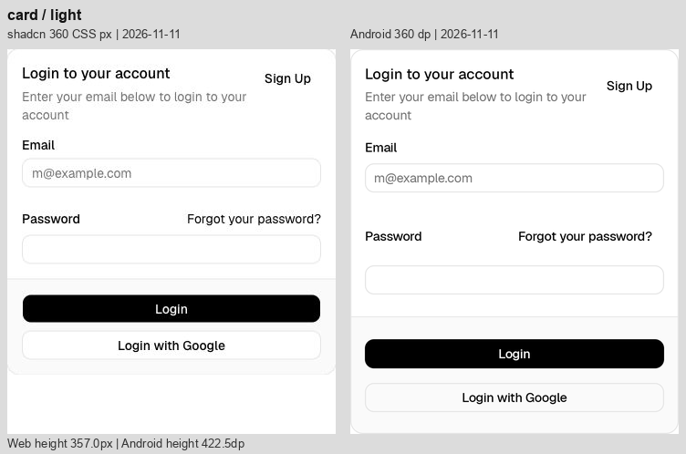
Text 轻
正文换行一致，总高仅多 0.4；剩余为字形栅格化和基线细差。
360 同宽画布 · 网页 40.0 → Android 40.4
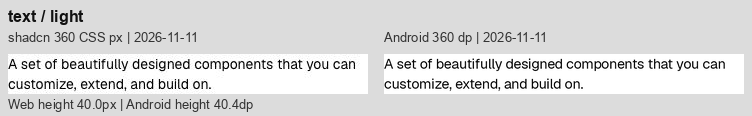
Button 轻
默认按钮可见高度约 32，宽度、圆角接近；文字基线和边缘有细差。64 是对照画布高，不是按钮高。
360 同宽画布 · 网页 64.0 → Android 64.0
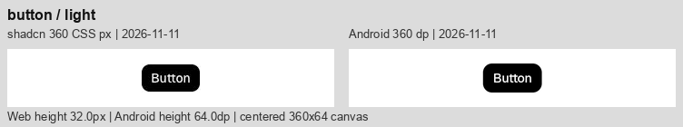
Badge 轻
可见高度约 20；总宽略窄，浅色 Destructive 底色较淡。代码中浅色 alpha 为 .08，原站示例为 /10。
360 同宽画布 · 网页 64.0 → Android 64.0
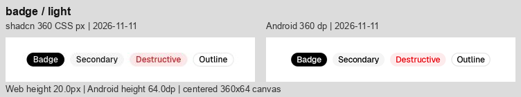
Input 轻
同为 320 内宽、约 32 可见高度；文字起点和边框抗锯齿略不同，深色填充/边框更明显。
360 同宽画布 · 网页 64.0 → Android 64.0
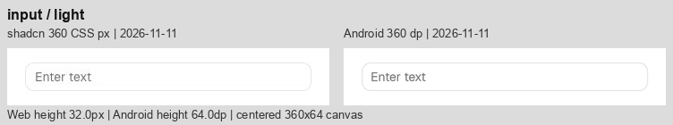
Select 轻
192 内宽、32 外观高与单下箭头一致；主要剩余深色填充和文字/箭头基线细差。
360 同宽画布 · 网页 64.0 → Android 64.0
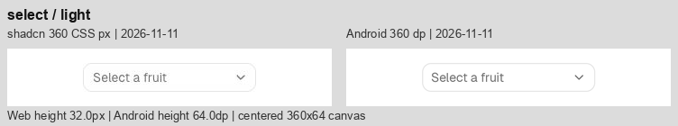
Switch 轻
32×18.4 轨道、白色滑块及标签距离基本接近；只见小幅文字占宽和边缘差异。
360 同宽画布 · 网页 64.0 → Android 64.0
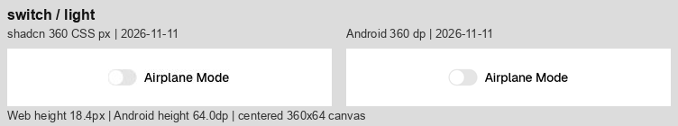
Progress 轻
都停在 66%，216 宽、4 高一致；起点圆角与像素边缘仍有细差。
360 同宽画布 · 网页 64.0 → Android 64.0

Separator 轻
同为 360 宽、1 高；主要是像素取整/颜色合成导致的细线明暗差异。
360 同宽画布 · 网页 64.0 → Android 64.0

Table 轻
四列、金额和合计均完整；Android 总高增加 3.4，行间分隔线逐渐偏下，Status/Method 列边界与网页有少量偏移。
360 同宽画布 · 网页 371.5 → Android 374.9
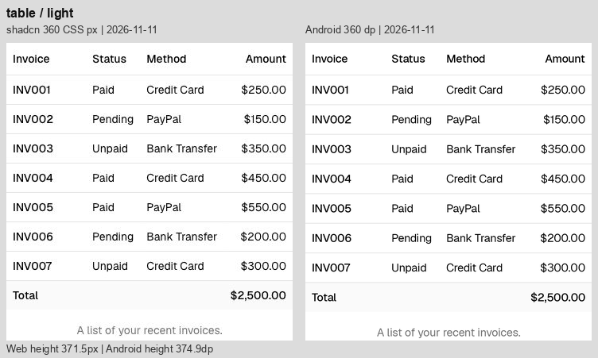
Bar Chart 中
总高增加 12.1，绘图区与横轴整体下移约 5，页脚下移约 8；柱形数值比例接近，蓝色和细网格仍不同。
360 同宽画布 · 网页 354.4 → Android 366.5
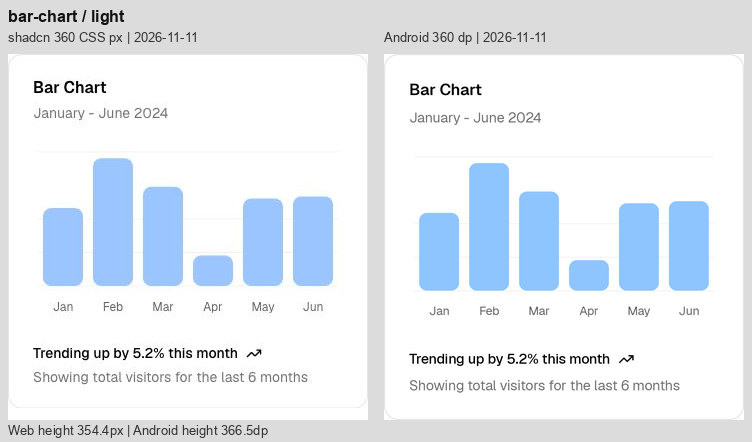
Line Chart 中
自然曲线峰谷形状接近；绘图区和页脚偏下，总高增加 12.1；线色与抗锯齿不同。
360 同宽画布 · 网页 354.4 → Android 366.5
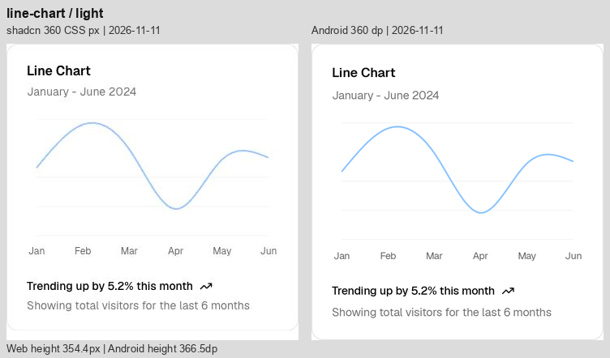
Area Chart 中
自然曲线形状接近，总高增加 12.1；深色面积填充明显更偏蓝灰/更暗，图表内网格与描边也有细差。
360 同宽画布 · 网页 354.4 → Android 366.5
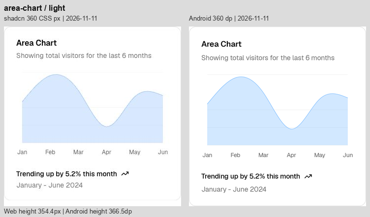